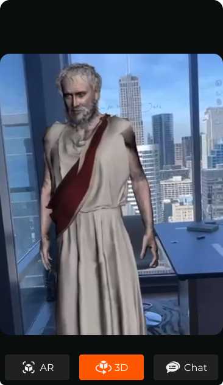
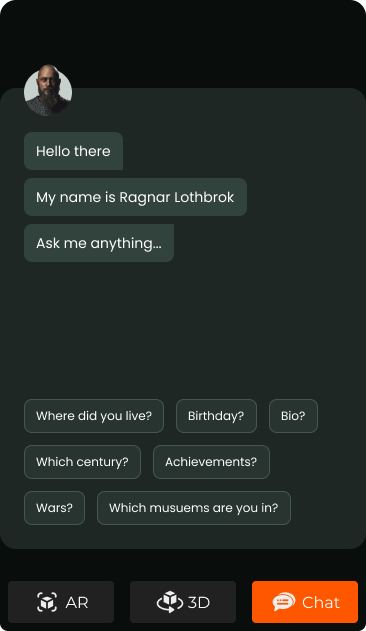

<div class="how-it-works-container">
    <div class="how-it-works-center">
        <div class="header">
            <h1 class="title">Why Akadimia?</h1>
            <div>
                <!-- <iframe width="560" height="315" [src]="safeURL" title="YouTube video player" frameborder="0"
                    allow="accelerometer; autoplay; clipboard-write; encrypted-media; gyroscope; picture-in-picture"
                    allowfullscreen></iframe> -->
    
                <iframe class="video mtxl" width="560" height="315" [src]="safeURL"
                    title="YouTube video player" frameborder="0"
                    allow="accelerometer; autoplay; clipboard-write; encrypted-media; gyroscope; picture-in-picture"
                    allowfullscreen></iframe>
            </div>
        </div>
        <div class="mtxl">
            <div class="info-card">
                <div class="demo"></div>
                <div class="details">
                    
                    <h2 class="mbm">Augmented Reality</h2>
                    <p>Augmented reality consists of layering digitally created elements (Akadimia Characters) over the real world in front of the user. The interactive nature of this technology makes it an ideal fit for accessing information, provide additional information and resources for students to engage with on their own terms.
                        In the near future with the arrival of AR wearable devices and 5G technology the user's experience with Akadimia interactive nature of AR functionality will certainly be enhanced to a new level.</p>
                </div>
            </div>
            <div class="info-card">
                <div class="demo"></div>
                <div class="details">
                    
                    <h2 class="mbm" >3D Interaction</h2>
                    <p>From the dawn of humanity to the age of the iPhone (or the digital age) the world has been changing rapidly and there have been people who were directing these changes with their discoveries and inventions, whose ideas had far reaching implications in shaping the world into the modern civilisation we are now living through. We at Akadimia aim to embrace and perpetuate those historical figures and their works by reviving their digital avatars.</p>
                </div>
            </div>
            <div class="info-card">
                <div class="demo"></div>
                <div class="details">
                    
                    <h2 class="mbm">AI Chat</h2>
                    <p>Applied Conversational Al requires both science and art to create successful applications that incorporate context, personalization and relevance within human to computer interaction. Our team has developed a unique Conversational Al that can communicate like a human by recognizing speech and text, understanding intent, and responding in a way that mimics human conversation.</p>
                </div>
            </div>
        </div>
    </div>
</div>
